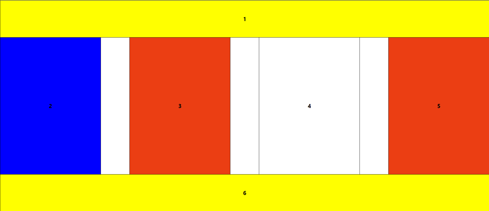
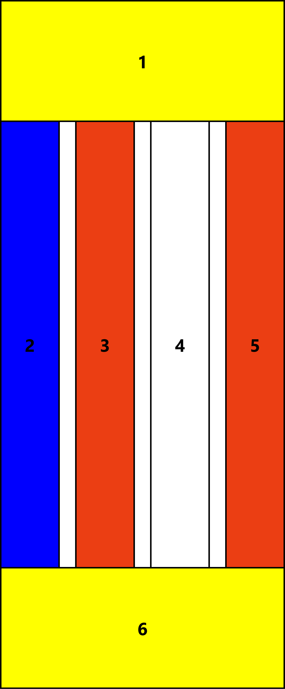

Гумова таблична верстка
Посилання на веб-сторінку:https://shafinsky.github.io/IS-31_ShafinskyiY_Laba3/task2.2/task2.2.html
Скріншоти веб-сторінки
 Код веб-сторінки
task2.2.html
<!DOCTYPE html>
<html lang="en">
<head>
<meta charset="UTF-8">
<meta name="viewport" content="width=device-width, initial-scale=1.0">
<title>Task2.2</title>
<link rel="stylesheet" href="https://cdnjs.cloudflare.com/ajax/libs/modern-normalize/1.0.0/modern-normalize.min.css">
<link rel="stylesheet" href="./style2.css">
</head>
<body>
<header></header>
<main>
<table class="rubber-table-layout">
<tr>
<td class="element_1_6" colspan="7">
<h2 class="element_description">1</h2>
</td>
</tr>
<tr>
<td class="element2">
<h2 class="element_description">2</h2>
</td>
<td class="spacer"></td>
<td class="element_3_5">
<h2 class="element_description">3</h2>
</td>
<td class="spacer"></td>
<td class="element4">
<h2 class="element_description">4</h2>
</td>
<td class="spacer"></td>
<td class="element_3_5">
<h2 class="element_description">5</h2>
</td>
</tr>
<tr>
<td class="element_1_6" colspan="7">
<h2 class="element_description">6</h2>
</td>
</tr>
</table>
</main>
<footer></footer>
</body>
</html>
style2.css
* {
margin: 0;
padding: 0;
box-sizing: border-box;
}
table {
border-collapse: collapse;
width: 100%;
}
table, td {
border: 2px solid black;
}
.rubber-table-layout {
max-width: 100%;
margin: 0 auto;
}
h2.element_description {
text-align: center;
color: black;
}
.element_1_6 {
height: 162px;
background-color: yellow;
width: 35px;
}
.element2,
.element4,
.element_3_5 {
width: 70px;
height: 600px;
}
.element2 {
background-color: blue;
}
.element4 {
background-color: white;
}
.element_3_5 {
background-color: rgb(235, 62, 19);
}
.spacer {
width: 20px;
background-color: transparent;
border: none;
}
Теорія
Гумова таблична верстка — це метод верстки, при якому таблиця розтягується або стискається в залежності від розміру вікна браузера або екрана користувача. Основна мета такого підходу — забезпечити адаптивність та гнучкість макета, щоб він міг підлаштовуватися під різні пристрої та роздільні здатності.
На відміну від фіксованої верстки, де ширина стовпців заздалегідь визначена і залишається незмінною, у гумовій верстці використовуються відсотки або гнучкі величини для ширини елементів. Це дозволяє таблиці динамічно змінювати свої розміри. Наприклад, якщо сторінка відкривається на великому екрані, таблиця розтягнеться, щоб заповнити доступний простір, а на меншому екрані вона стискається для зручного перегляду без потреби прокручування.
Однією з головних переваг гумової табличної верстки є її адаптивність, що робить цей підхід особливо корисним для створення веб-сайтів, які будуть коректно відображатися на різних пристроях. Проте, складність такого підходу полягає в необхідності ретельно балансувати між гнучкістю та збереженням чіткого і читабельного вигляду таблиці, особливо коли вміст таблиці містить великий обсяг тексту або зображень.